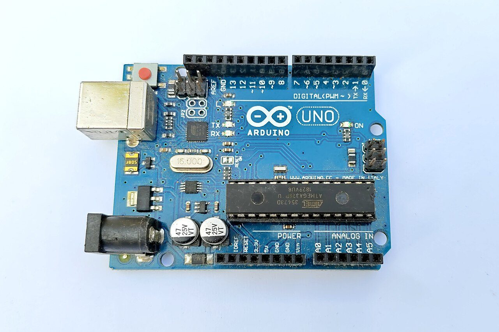
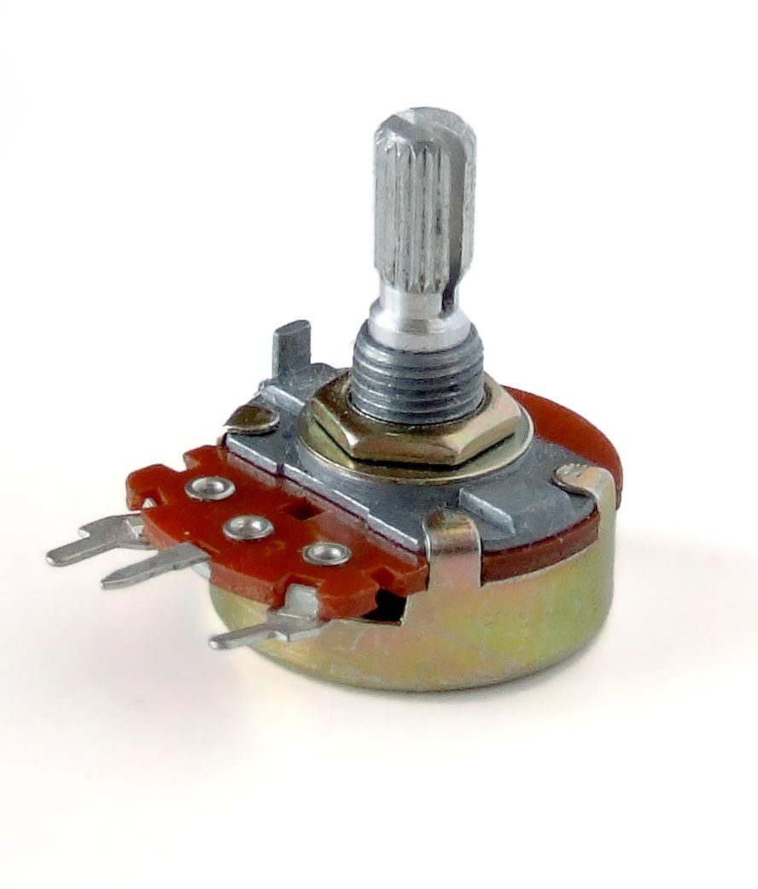
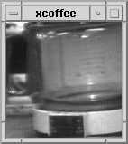
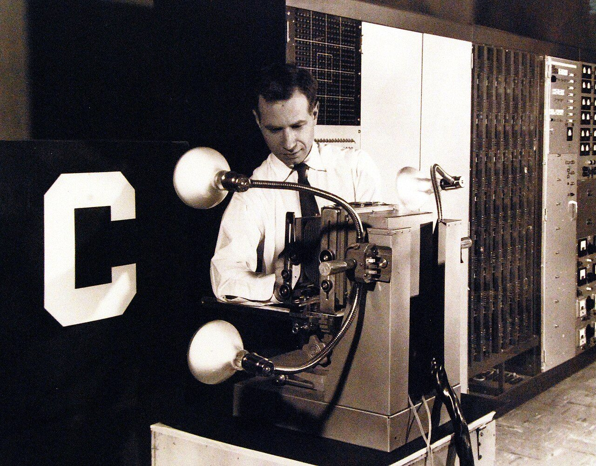
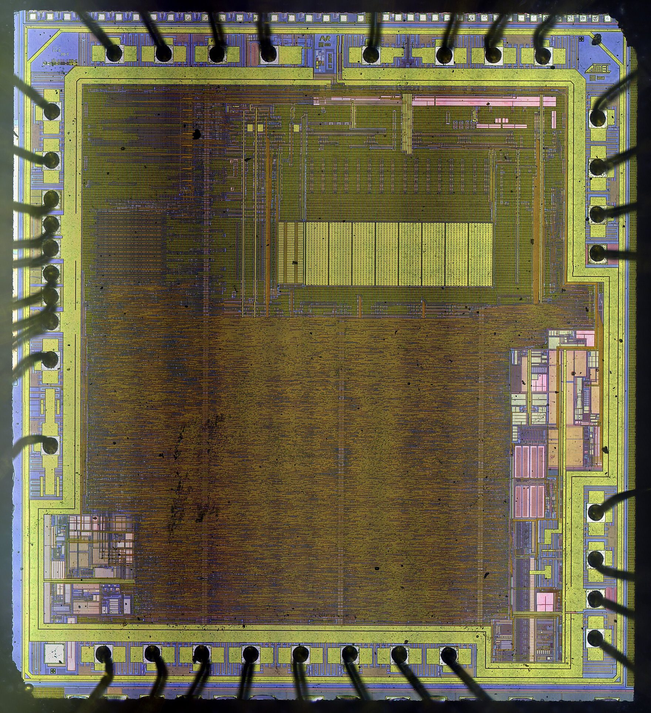
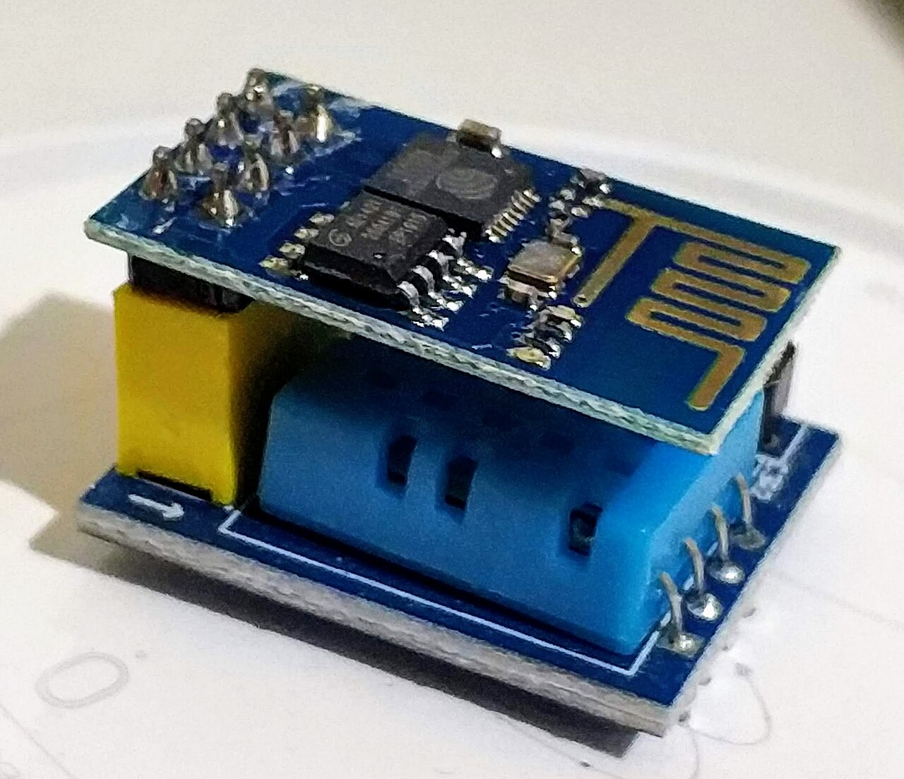
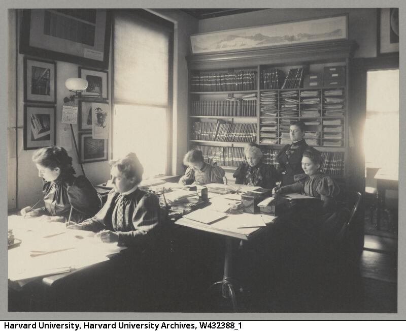
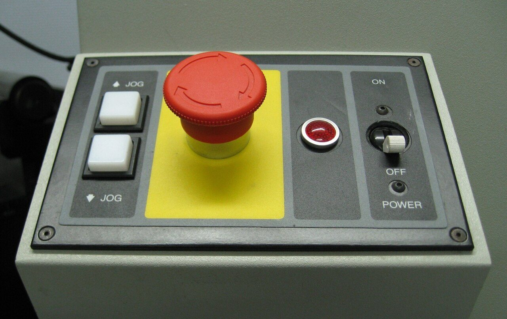

Tu programa de bloques es un dibujo, y además te esconde algo
El mismo programa, en bloques y en C++, uno al lado del otro. Y la línea que los bloques no tenían: decir de qué tipo es cada número.
Este curso todo gira alrededor de un proyecto: un aparato de verdad, con un sensor que se entera de algo y un actuador que hace algo. Un riego que no deja morir la planta del aula en Semana Santa, un aviso de que el aula está cargada, un contenedor que dice que está lleno. Todos tienen una placa dentro, y todos tienen que estar programados.
De qué va esta unidad
Una placa puede decidir sola. ¿Y si además pudiera avisarte desde lejos, o aprender de lo que ve?Voz sintetizada sobre guión propio. La boca sigue el volumen real de la voz.
En 2.º ya programaste, y por bloques. Así que vamos a empezar con un encargo pequeño y tonto, a ver qué pasa.
La única manera es hacerle una captura de pantalla. Y ahí se ve el problema entero de golpe, porque una captura:
- no se puede ejecutar: es un dibujo de un programa, no un programa;
- no se puede buscar dentro (¿dónde ponía el 200?);
- no se puede comparar con la de ayer para ver qué han cambiado;
- y no se puede pegar en ella el ejemplo que trae la hoja de características de tu sensor, porque ese ejemplo viene escrito en texto. Todos vienen en texto.
Los bloques no eran un juguete: ordenaban de verdad. Entonces, ¿qué es exactamente lo que se gana escribiendo lo mismo en texto? Escribe dos cosas en el cuaderno. Una la vas a acertar; la otra probablemente no, y es la importante.
La que casi nadie acierta es esta: los bloques te escondían una decisión. Una decisión que en una placa de verdad la tienes que tomar tú, y que cuando se toma mal el programa no da error: da un número equivocado, que es mucho peor.
La placa de este curso es un Arduino. No es más lista que la micro:bit: es más desnuda, y eso es justo lo que nos interesa.

Lo que ya sabías, con otro nombre
Un programa de Arduino se llama sketch y tiene dos partes obligatorias. No son dos inventos nuevos: son exactamente los dos bloques con los que empezabas en 2.º
La estructura de un sketch
void setup() {
// se ejecuta UNA vez, al encender o al pulsar reset
}
void loop() {
// se ejecuta PARA SIEMPRE, una vuelta detrás de otra
}
setup()es «al iniciar». Ahí se dice qué pin es entrada y cuál salida, y se abre el puerto serie.loop()es «para siempre». Cuando llega al final, vuelve a empezar, y así hasta que se quite la corriente.- Todo lo demás del lenguaje cabe en tres reglas: cada instrucción acaba en
punto y coma, lo que va junto se agrupa entre llaves, y lo que empieza por
//es un comentario que la placa se salta.
Aquí tienes el mismo programa escrito de las dos maneras, una al lado de la otra. Pulsa una instrucción y sigue a la vez el bloque iluminado y la línea iluminada. Son lo mismo.
Bloques · lo que hacías en 2.º
Código · C++ de Arduino
Monitor serie
Y ahora, la línea que los bloques no tenían
Mira la primera línea del código: int cuenta = 0;. En bloques, para tener
una variable, la creabas y ya. Aquí hay que decir además de qué tipo es, y
eso no es burocracia.
Tu móvil tiene varios gigabytes de memoria y un sistema operativo que va buscando hueco para cada cosa sobre la marcha. Un Arduino Uno tiene 2.048 bytes de memoria de trabajo y no tiene sistema operativo: no hay nadie a quien pedirle sitio. Por eso el sitio se reserva antes de que el programa arranque, y para reservarlo hay que saber cuánto. Eso es lo que dice el tipo.
Dos mil bytes es menos que este párrafo.
Los tipos que vas a usar
| tipo | bytes | qué guarda |
|---|---|---|
bool | 1 | solo true o false |
char | 1 | de −128 a 127, o una letra |
int | 2 | de −32.768 a 32.767, sin decimales |
unsigned int | 2 | de 0 a 65.535, sin negativos |
long | 4 | de −2.147.483.648 a 2.147.483.647 |
float | 4 | con decimales, unas 7 cifras de precisión |
El tipo decide tres cosas: cuántos bytes ocupa, hasta dónde cuenta y si admite decimales. Elegir mal no da error: da números mal.
Vuelve a la escena de arriba y haz dos pruebas. Las dos fallan, y fallan callando.
Las dos trampas de los enteros
- Truncamiento. Con
int, escribe 0,5 en el paso y da 40 vueltas.cuentasigue valiendo 0. Cada suma da 0,5 y al guardarla en un entero se tiran los decimales. No hay aviso. - Desbordamiento. Con
int, escribe 1000 y da 40 vueltas. A las 33 vueltas debería valer 33.000, pero el máximo de unintes 32.767: al pasarse da la vuelta y se queda en un número negativo. Tampoco hay aviso. - La misma prueba con
longva bien: caben más números porque ocupa el doble.
Dos cosas que conviene saber y que no vienen en casi ningún sitio:
- En un Arduino Uno un
intocupa 2 bytes. En una placa de 32 bits (ESP32, Arduino Due, Uno R4) ocupa 4, y el mismo programa deja de desbordarse. El tipo depende de la placa, no del lenguaje. - En el Uno,
doublees exactamente lo mismo quefloat: 4 bytes. Ponerdoublecreyendo que se gana precisión no gana nada.
Doce minutos con el entorno de Arduino delante, por si quieres ver escribir el sketch de cero antes de la práctica. El vídeo no se carga hasta que lo pulsas, y se reproduce sin cookies de seguimiento. Si la red del centro bloquea YouTube, ábrelo directamente aquí. El vídeo es de su autor y no forma parte del material publicado bajo la licencia de esta página.
Primera parte · en Tinkercad (10 min)
Abrid Tinkercad Circuits, poned un Arduino Uno y un LED en el pin 13 con su resistencia. Escribid el sketch en código (no en bloques) para que parpadee y para que escriba en el monitor serie cuántas veces ha parpadeado.
- Copiad en la libreta el sketch entero, con sus llaves y sus puntos y coma.
- Al lado, dibujad los bloques equivalentes y unid con una flecha cada bloque con su línea. Tiene que haber tantas flechas como instrucciones.
Segunda parte · el tipo de cada dato (10 min)
Vuestro proyecto de curso va a guardar números. Para cada uno, decid qué tipo usaríais, cuántos bytes ocupa y por qué ese y no otro:
- Las veces que se ha regado la planta este mes (riego automático).
- Los centímetros que hay desde la tapa hasta la basura, de 0 a 200 (contenedor que avisa).
- La temperatura del aula con un decimal, de 0 a 40 °C (aviso de ventilación).
- Los milisegundos que lleva encendida la placa, sabiendo que en una hora ya van 3.600.000. Este tiene truco: mirad hasta dónde llega cada tipo.
Cómo se evalúa
- El sketch compila en Tinkercad y el LED parpadea (3 puntos).
- Las flechas entre bloques y líneas están todas y son correctas (2 puntos).
- Los cuatro tipos elegidos, con sus bytes (3 puntos).
- La justificación del cuarto dice que un
intse queda corto (2 puntos).
- ¿Qué hace
setup()y qué haceloop()?Ver respuesta
setup()se ejecuta una sola vez al encender la placa;loop()se repite para siempre. Son «al iniciar» y «para siempre» de los bloques. - ¿Por qué hay que decir el tipo de una variable, si en bloques no hacía falta?
Ver respuesta
Porque la placa reserva la memoria antes de arrancar y no tiene sistema operativo que le busque hueco sobre la marcha: hay que decirle cuántos bytes. De paso, el tipo decide hasta dónde cuenta y si admite decimales.
- Un programa suma 1000 a un
intuna y otra vez y a las 33 vueltas el número se vuelve negativo. ¿Qué ha pasado y cómo se arregla?Ver respuesta
Se ha desbordado: 33.000 no cabe en un
int, que llega a 32.767, y al pasarse da la vuelta. No es un fallo de la placa, es el tipo. Se arregla usandolong, que ocupa 4 bytes en vez de 2. - ¿Por qué es peor este tipo de fallo que uno que pare el programa?
Ver respuesta
Porque no avisa. El programa sigue corriendo y dando números, solo que equivocados, y nadie se entera hasta que el riego se salta un día o el aviso no salta. Un programa que se para se arregla; uno que miente, hay que pillarlo.
Lectura del tema
Una sesión entera dedicada a leer y contestar, y no va al final: conviene hacerla pronto, porque cuenta por qué importan las tres cosas que vienen después. 30 párrafos numerados: cada uno lee el suyo en voz alta, en orden. Después, diez preguntas por escrito.
El sensor no dice «seco»: dice 731
Una entrada digital no mide, compara. Para saber cuánto hace falta un conversor, y el conversor tiene escalones.
El programa de la sesión pasada ya se ejecuta en la placa. Vamos a enchufarle el sensor
de vuestro proyecto y a leerlo con lo único que sabemos hasta ahora,
digitalRead().
No es que el sensor sea malo. El sensor está dando una tensión distinta en cada caso; lo que pasa es que la entrada digital no mide: compara con un umbral que trae de fábrica y suelta sí o no.
En un Arduino Uno alimentado a 5 V, una entrada digital da 1 por encima de unos 3,0 V y 0 por debajo de unos 1,5 V. Entre medias, ni lo uno ni lo otro: lo que salga. Ese umbral no lo eliges tú y no aparece en tu programa.
Lo que quieres saber no es «¿hay agua?». Es cuánta. Y «cuánta» no es una respuesta de sí o no: es un número. ¿De dónde puede salir ese número, si lo único que llega al pin es una tensión?
La pieza que falta lleva dentro del chip desde el principio y tiene un nombre que suena peor de lo que es: conversor analógico-digital, o A/D. En Arduino se usa con una sola instrucción:
Definiciones
Señal analógica: la que puede tomar cualquier valor dentro de un margen. La tensión que da un sensor es analógica: entre 0 y 5 V hay infinitos valores.
Señal digital: la que solo puede tomar valores de una lista. Un número entero es digital: entre 512 y 513 no hay nada.
Conversor A/D: el circuito que convierte una tensión en un número entero. En el Arduino Uno es de 10 bits: 210 = 1.024 valores distintos, numerados de 0 a 1.023.
analogRead(A0) devuelve ese número. No devuelve voltios, ni grados, ni
por ciento: devuelve un entero de 0 a 1023.
Y aquí está la idea de la sesión. Si entre 0 y 5 V hay infinitos valores y el conversor solo tiene 1.024 casillas, tiene que juntar valores distintos en la misma casilla. Eso es el escalón, y se ve:
El escalón, y la cuenta de volver
Escalón (o resolución): lo que hay que cambiar la tensión para que el número cambie en uno.
escalón = Vref / 2bits = 5 V / 1.024 = 0,00488 V = 4,88 mV
Para volver del número a voltios:
V = lectura · Vref / 1023
Y de voltios a lo que mide el sensor, con la fórmula de su hoja de características. Por ejemplo, un termómetro TMP36 da 0,5 V a 0 °C y sube 10 mV por cada grado, así que:
°C = (V − 0,5) · 100
Habrás visto que arriba aparecen 1.024 y 1.023, y no es una errata. El escalón vale Vref/1024 porque hay 1.024 escalones; la cuenta de volver se hace dividiendo entre 1023 porque así el número más alto corresponde exactamente a Vref. Las dos cuentas se diferencian en un 0,1 %, que es menos de lo que se equivoca el propio conversor. Se dice porque las dos circulan y conviene saber de dónde sale cada una.
Otro dato que sirve en el proyecto: cada analogRead() tarda unos
100 microsegundos. Si el loop() lee diez sensores, ahí se va un
milisegundo por vuelta.
La trampa de los decimales que no hay
En la escena, sube el mando de decimales que escribo hasta 4 y mira lo que pasa: aparecen dígitos tachados. No es un adorno. Son cifras que la división ha calculado y que el sensor no puede sostener.

Cuántos decimales puedes escribir
Calcula cuánto vale un escalón en tus unidades y escribe solo hasta ahí.
Ejemplo con el TMP36 a 5 V: el escalón vale 4,88 mV y el sensor da 10 mV por grado,
así que un escalón son 0,49 °C. Tu termómetro no puede
distinguir medio grado. Si el programa escribe 21.37, el 7 no existe y el
3 es discutible: lo honrado es 21,4 °C.
Que un número tenga muchos decimales no lo hace más exacto. Los decimales de más los ha puesto la división, no la medida.
map(), y su letra pequeña
Pasar de un margen a otro
map(valor, desdeMin, desdeMax, hastaMin, hastaMax) convierte un número
de un margen a otro. map(lectura, 0, 1023, 0, 100) pasa la lectura a
porcentaje.
Cuidado: map() hace la cuenta con enteros y trunca: tira
los decimales en vez de redondear. map(5, 0, 1023, 0, 100) da 0, no 0,49.
Y solo devuelve 100 cuando la lectura vale exactamente 1023.
Si necesitas los decimales, haz la cuenta tú con float:
float pct = lectura * 100.0 / 1023.0;
En la escena, cambia la referencia de 5 V a 1,1 V con el termómetro puesto. El escalón baja de 0,49 °C a 0,11 °C: mides cuatro veces más fino. Pero a cambio, por encima de 60 °C la tensión se sale de la referencia y el conversor da siempre el número más alto: deja de distinguir. Más resolución o más margen; las dos a la vez, no. Esto es una decisión de diseño, y es vuestra.
El montaje exacto de la práctica, hecho en Tinkercad, por si queréis verlo antes de montarlo. El vídeo no se carga hasta que lo pulsas, y se reproduce sin cookies de seguimiento. Si la red del centro bloquea YouTube, ábrelo directamente aquí. El vídeo es de su autor y no forma parte del material publicado bajo la licencia de esta página.
Primera parte · en Tinkercad (10 min)
Arduino Uno, un potenciómetro con el cursor a A0 y los extremos a 5 V y GND.
Sketch: leer analogRead(A0) y escribir en el monitor serie la
lectura y la tensión, separadas por una coma.
- Girad el eje a cinco posiciones repartidas y anotad la pareja de valores.
- Comprobad una de ellas a mano, con la fórmula, y ved si os da lo mismo que la placa.
- Girad muy despacio y mirad la lectura: anotad si sube de uno en uno o a saltos, y explicad por qué.
Segunda parte · el escalón de vuestro sensor (10 min)
Calculad, para dos de estos tres, cuánto vale un escalón en las unidades que le importan al proyecto. Escribid la cuenta completa, con unidades en cada paso:
- Aviso de ventilación: termómetro TMP36 (10 mV por grado), a 5 V. ¿Cuántos grados vale un escalón? ¿Tiene sentido escribir décimas?
- Lámpara que se ajusta sola: la LDR del montaje de la escena. Con el mando de luz a 100 lux, ¿cuánto vale un escalón en lux? ¿Y a 1.000 lux? (No vale lo mismo, y esa es la gracia.)
- Riego automático: sonda de humedad. Con el modelo de la escena, ¿cuántos escalones hay entre tierra seca y tierra empapada?
Cómo se evalúa
- Las cinco parejas lectura/tensión, anotadas (2 puntos).
- La comprobación a mano coincide con la placa (2 puntos).
- La explicación de los saltos nombra el escalón (2 puntos).
- Los dos escalones calculados, con unidades en cada paso (3 puntos).
- Se dice cuántos decimales tiene sentido escribir (1 punto).
- ¿Por qué una entrada digital no sirve para saber cuánto de seca está la tierra?
Ver respuesta
Porque no mide: compara con un umbral de fábrica y devuelve 0 o 1. Toda la información intermedia se pierde, y justo esa era la que interesaba.
- ¿Por qué
analogRead()llega a 1023 y no a 1000?Ver respuesta
Porque el conversor es de 10 bits: 210 = 1.024 valores distintos, numerados desde el 0. El último es el 1023.
- Tu programa escribe
21.37grados con un TMP36 a 5 V. ¿Cuántos de esos dígitos son de verdad?Ver respuesta
Un escalón del conversor vale 4,88 mV, y el sensor da 10 mV por grado: 0,49 °C por escalón. El termómetro no distingue medio grado, así que lo honrado es 21,4 °C. El 7 lo ha puesto la división.
- ¿Qué devuelve
map(5, 0, 1023, 0, 100)y por qué?Ver respuesta
0. La cuenta exacta sería 0,49, pero
map()trabaja con enteros y trunca. Si hacen falta decimales hay que hacer la cuenta a mano confloat.
Decide bien, pero decide en silencio y desde el aula
Un aparato que manda un dato a un sitio y otro que lo lee. Protocolo, identificador, dato y hora. Y quién se queda todo eso.
Vuestro aparato ya funciona: lee, decide y actúa. Y ahora llega el puente.
Lo que sale casi siempre es «una app» o «conectarlo a internet». Las dos respuestas tienen el mismo problema: no dicen nada. Una app es una pantalla, y una pantalla no puede enseñar un dato que nadie ha mandado.
Olvida la palabra internet. Para que tú, en tu casa, veas un número que ha medido una placa que está en el aula, ¿cuántas cosas distintas tienen que ocurrir? Escríbelas como pasos.
Son dos, y ninguna es misteriosa: alguien tiene que mandar un mensaje y alguien tiene que estar escuchando. Todo lo demás —la nube, el IoT, los aparatos inteligentes— son nombres para esas dos cosas.
Que esto no es nuevo lo demuestra la primera cámara que se puso en la red, y lo que se veía en ella era tan importante como esto:

Definiciones
IoT (internet de las cosas): aparatos que no son ordenadores —una placa, un contador de la luz, una báscula— que mandan lo que miden a otro sitio de la red y a veces reciben órdenes desde allí.
Un mensaje de uno de esos aparatos lleva cuatro cosas, y ninguna más:
- Quién lo manda: un identificador. Sin él, el dato no vale nada: 38 % ¿de qué?
- Qué mide: la magnitud, el valor y su unidad.
- Cuándo: la marca de tiempo. La pone el aparato, o el que recibe al recibirlo.
- A dónde: la dirección del servidor y el protocolo, que es el idioma en que se escribe el mensaje.
Todo lo demás que viaja es sobre: sirve para que el mensaje llegue y se entienda, no para medir nada.
Aquí tienes el mensaje de verdad, escrito en los tres formatos que se usan. Cambia el identificador, el valor y cada cuánto se manda, y mira lo que ocupa cada uno y lo que eso supone en un curso entero.
El mensaje, tal cual sale
Un cuadrito por byte · primero el sobre, luego tu dato
Por dónde pasa, y quién lee qué
Dos maneras de hablar
Petición y respuesta (HTTP): el aparato llama al servidor, le entrega el dato y espera contestación. Es lo mismo que hace tu navegador al abrir una página. Ventaja: lo entiende todo el mundo. Pega: el sobre es enorme comparado con el dato, y el que quiere leerlo tiene que preguntar una y otra vez.
Publicar y suscribirse (MQTT): el aparato publica en un
tema (por ejemplo ies/aula12/hum) y se lo manda a un intermediario, el
bróker. Quien quiera enterarse se suscribe a ese tema, y el bróker
se lo envía en cuanto llega. Ventaja: el mensaje es diminuto y nadie tiene que
estar preguntando. Pega: hace falta un bróker, y eso es alguien.
MQTT no se inventó para casas inteligentes. Lo hicieron en 1999 Andy Stanford-Clark (IBM) y Arlen Nipper (Arcom) para vigilar oleoductos, con sensores conectados por satélite: el enlace era carísimo y lento, así que cada byte contaba. Por eso un mensaje de MQTT puede ser de dos bytes. Esa obsesión por lo pequeño es lo que lo hizo perfecto para aparatos a pilas, veinte años después.
Y un aviso práctico: un Arduino Uno no se conecta solo. No tiene wifi ni Ethernet. Hace falta añadirle un módulo (un ESP8266, una placa ESP32 en su lugar, o una tarjeta de Ethernet). Eso cambia el presupuesto del proyecto, y hay que decirlo en la memoria.
La pregunta incómoda
Ahora mira la parte de abajo de la escena y activa mandarlo cifrado. El router del centro deja de ver el dato. Pero fíjate en lo que sigue viendo.
Lo que el cifrado no tapa
El cifrado protege el contenido del mensaje. No tapa los metadatos: quién habla con quién, cuánto ocupa y cada cuánto.
Con eso basta para saber cosas que nadie ha mandado. Una medida cada 30 segundos desde un aula, durante un curso, son más de ochocientas mil filas con su hora: dicen a qué hora se abre el centro, qué días no va nadie, cuánto duró el puente y a qué hora se quedó alguien hasta tarde. Y el bróker lo ve todo siempre: es el que guarda.
Un dato de una planta no es un dato de una persona. Pero un dato de un aula, con su hora, habla de las personas que hay dentro, aunque nadie lo haya escrito.
Las tres preguntas antes de conectar algo
- ¿Qué sale exactamente? No «datos»: la lista de campos, escrita.
- ¿Dónde se queda, y cuánto tiempo? Quién es el dueño del servidor y cuándo se borra.
- ¿Quién puede pedirlo? Y con qué permiso.
Si las tres no tienen respuesta, el aparato no está terminado, aunque funcione.
Una introducción al protocolo, con el bróker y los temas. El vídeo no se carga hasta que lo pulsas, y se reproduce sin cookies de seguimiento. Si la red del centro bloquea YouTube, ábrelo directamente aquí. El vídeo es de su autor y no forma parte del material publicado bajo la licencia de esta página.
Primera parte · diseñar el mensaje (8 min)
Elegid dos de los proyectos del curso —por ejemplo el riego y el aviso de ventilación— y escribid para cada uno, en la libreta:
- El identificador que le pondríais, y por qué ese.
- Los campos del mensaje, con sus unidades.
- El tema de MQTT, con la misma forma que en la escena.
- Cada cuánto hay que mandarlo. Ojo: no es lo mismo una planta, que cambia en horas, que un contenedor, que se llena en minutos. Razonadlo.
Segunda parte · las cuentas (6 min)
Con la escena, y anotando los números:
- Cuántos bytes ocupa vuestro mensaje en MQTT y en HTTP.
- Qué porcentaje de cada uno es dato de verdad.
- Cuántas filas se guardan en un curso con el periodo que habéis elegido.
Tercera parte · las tres preguntas (6 min)
Contestad por escrito, para uno de los dos proyectos, las tres preguntas del recuadro anterior. Y una cuarta, esta con nombre y apellidos: ¿a quién le tendríais que pedir permiso en el centro antes de poner ese aparato a mandar datos fuera?
Cómo se evalúa
- Los cuatro campos de los dos mensajes, con unidades (3 puntos).
- El periodo elegido está razonado con lo que tarda en cambiar la magnitud (2 puntos).
- Las tres cuentas, con sus números (2 puntos).
- Las tres preguntas contestadas sin frases hechas (2 puntos).
- La cuarta pregunta señala a alguien concreto (1 punto).
- ¿Qué cuatro cosas lleva el mensaje de un aparato conectado?
Ver respuesta
Quién (identificador), qué (magnitud, valor y unidad), cuándo (marca de tiempo) y a dónde (dirección y protocolo). Lo demás es sobre.
- ¿Qué diferencia hay entre HTTP y MQTT, en una frase cada uno?
Ver respuesta
HTTP: el aparato pregunta al servidor y espera respuesta; el sobre es grande. MQTT: el aparato publica en un tema y un bróker se lo pasa a quien se haya suscrito; el mensaje es diminuto.
- El mensaje va cifrado. ¿Qué puede saber aún el router del centro?
Ver respuesta
Los metadatos: con quién habla la placa, cuánto ocupa cada mensaje y cada cuánto lo manda. Con eso se sabe si hay alguien en el edificio, aunque no se lea ni un dato.
- ¿Por qué el periodo de envío es una decisión y no un detalle?
Ver respuesta
Porque decide tres cosas a la vez: cuánto tarda en enterarse la gente, cuánta batería y datos gasta el aparato y cuánto rastro deja guardado. Más a menudo no es siempre mejor.
si lectura > 600.
Ahora te voy a pedir algo que sabes reconocer perfectamente con los ojos y que
no vas a poder escribir en un si. Y ahí empieza otra cosa.
Escribe el si. Ah, ¿que no puedes?
Hay cosas que sabes reconocer y no sabes explicar. Ahí se cambian las reglas por ejemplos, con todo lo que eso arrastra.
Hasta aquí, todo lo que decide vuestro aparato lo habéis decidido vosotros:
si la lectura pasa de 600, riega. La placa no ha tenido ni una idea propia, y
eso está muy bien, porque así se puede depurar.
si. Cinco minutos.
Lo que pasa en esos cinco minutos es siempre lo mismo. Alguien propone el peso: el plástico pesa menos… salvo un brik lleno. Alguien propone el ultrasonidos: mide la distancia, no el material. Alguien propone el color: no hay sensor de color, y el papel de revista es de todos los colores.
Probad con otro. La sonda del riego da una lectura alta cuando la tierra está
seca. Y también cuando la sonda se ha salido del tiesto. Escribid el
si que distinga esas dos cosas. Tampoco sale.
Tú distingues papel de plástico de un vistazo, sin dudar. Y sin embargo no puedes escribir la regla. ¿Cómo puede ser que sepas hacer algo y no sepas explicar cómo lo haces?
Esa pregunta no es de tecnología, es más vieja. Y la respuesta práctica que se encontró es la que da nombre a esta sesión: si no sabes escribir la regla, da ejemplos y deja que la regla la busque un programa.
Programar y entrenar: quién pone qué
| Programar | Entrenar | |
|---|---|---|
| tú pones | la regla | los ejemplos, ya clasificados |
| el programa pone | aplicarla | los números de la regla |
| si falla | lees la regla y la arreglas | miras los ejemplos, porque la regla son números |
| funciona bien cuando | sabes explicarlo | sabes reconocerlo pero no explicarlo |
Entrenar no es que la máquina piense. Es una búsqueda: tú eliges qué forma tiene la regla (aquí, una recta) y el programa busca los números que mejor separan tus ejemplos.
El vocabulario, que es corto
- Característica: cada número que se le da al modelo para decidir. Aquí son dos, porque así caben en un dibujo.
- Ejemplo: unas características con su respuesta puesta por una persona.
- Etiqueta: esa respuesta. Alguien tuvo que ponerla a mano, una a una.
- Modelo: la regla ya con sus números dentro.
- Pesos: esos números. Aquí se llaman w₁, w₂ y b.
- Entrenamiento: el proceso de buscarlos corrigiendo cada vez que falla.
- Conjunto de prueba: ejemplos que se apartan y no se usan para entrenar, para ver si el modelo sirve fuera de lo que ya ha visto.
Ahora entrénalo tú. Pincha en el plano para poner ejemplos de cada clase y pulsa Entrenar. Con solo una pasada verás cómo se mueve la recta: cada vez que se equivoca con un ejemplo, empuja los pesos un poco hacia él. Eso es todo lo que hace entrenar.
Esto no es una simulación de un algoritmo: es el algoritmo, y tiene sesenta y tantos años.

La prensa de la época se vino arriba. Tras la rueda de prensa de la Marina, el New York Times escribió que aquello era «el embrión de un ordenador electrónico que esperan que sea capaz de andar, hablar, ver, escribir, reproducirse y ser consciente de su existencia». Reconocerás el tono: es el mismo de hoy.
Lo que pedía la máquina de verdad está en la escena. Y su límite, también. Pulsa El caso de 1969 y entrena todo lo que quieras.
Lo que un modelo NO puede hacer
- No puede aprender lo que su forma no permite. Una recta separa lo que se puede separar con una recta, y nada más. Marvin Minsky y Seymour Papert lo demostraron en 1969, y la investigación en redes neuronales se paró durante años. La salida no fue cambiar de ejemplos: fue poner varias capas.
- No sabe nada de donde no le has dado ejemplos. Y aun así contesta, con la misma seguridad.
- No sabe por qué dice lo que dice. Su regla son tres números.
Los tres números que hay que pedir siempre
Pulsa Ejemplos sesgados. Son veinte ejemplos correctos: nadie ha mentido al etiquetarlos. Solo que están todos tomados en la misma franja del plano, como si los hubierais recogido todos el mismo día. Mira las dos últimas filas de la tabla.
Los tres números
- Acierto sobre sus propios ejemplos. Es el que se enseña en los anuncios y es el que menos vale.
- Acierto sobre ejemplos que no ha visto. Es el único que dice si sirve. Si el primero es alto y este bajo, el modelo se ha aprendido tus ejemplos, no el problema.
- Lo que acertaría un modelo tonto que dijera siempre la clase más repetida. Si tu modelo no le gana a eso, no sirve de nada. Con 99 sanos y 1 enfermo, decir siempre «sano» acierta el 99 %.
Y no todos los fallos cuestan igual
Falsa alarma: dice que sí y era que no. Se le pasa: dice que no y era que sí.
- En el riego, una falsa alarma riega de más (se gasta agua); si se le pasa, la planta se muere. Los dos fallos no cuestan lo mismo.
- En el contenedor, una falsa alarma hace bajar al conserje en balde; si se le pasa, se desborda. Aquí la cuenta es otra.
Por eso un modelo no se juzga con un número: se juzga con los dos tipos de fallo y con lo que cuesta cada uno en tu proyecto.
Lo que se llama hoy inteligencia artificial es esto mismo, mucho más grande: en vez de 2 características, millones; en vez de una recta, capas y capas; en vez de 20 ejemplos, una parte enorme de lo que hay escrito en internet. Pero las tres frases de arriba siguen valiendo enteras, y la de los ejemplos sesgados es la que más problemas ha dado en la vida real.
Casos reales de modelos que aprendieron lo que había en sus ejemplos, con las consecuencias que tuvo. El vídeo no se carga hasta que lo pulsas, y se reproduce sin cookies de seguimiento. Si la red del centro bloquea YouTube, ábrelo directamente aquí. El vídeo es de su autor y no forma parte del material publicado bajo la licencia de esta página.
Primera parte · entrenar (8 min)
Con la escena de arriba, y anotando los números en una tabla de cuatro columnas (ejemplos, acierto en los suyos, acierto en los de prueba, modelo tonto):
- Vaciad y poned vosotros ocho ejemplos, cuatro de cada clase, repartidos. Entrenad y anotad la fila.
- Cargad Ejemplos repartidos. Anotad la fila.
- Cargad Ejemplos sesgados. Anotad la fila. Marcad la casilla de los datos de prueba y dibujad en la libreta dónde se equivoca (los que salen tachados).
- Con los sesgados puestos, pulsad preguntar y pinchad en la zona donde no hay ejemplos. ¿Contesta? ¿Duda?
Segunda parte · el límite (4 min)
Cargad El caso de 1969 y entrenad varias veces. Escribid en dos frases por qué no converge, y qué habría que cambiar: ¿más ejemplos, más pasadas, u otra cosa?
Tercera parte · el coste del fallo (8 min)
Elegid dos de los proyectos del curso. Para cada uno, escribid:
- Qué sería una falsa alarma y qué sería que se le pase, con ejemplos concretos.
- Cuál de los dos fallos es más caro, y por qué.
- Quién tendría que etiquetar los ejemplos si quisierais entrenar algo de verdad, cuántos harían falta y cuánto tiempo llevaría. Calculadlo: a diez segundos por ejemplo, 500 ejemplos son…
Cómo se evalúa
- La tabla con las tres filas y sus tres números (3 puntos).
- El dibujo de dónde falla el modelo sesgado (1 punto).
- La explicación del caso de 1969 dice que el problema es la forma de la regla, no la cantidad de ejemplos (2 puntos).
- Los dos tipos de fallo, con ejemplos concretos de cada proyecto (2 puntos).
- La cuenta del tiempo de etiquetado, hecha (2 puntos).
- ¿Cuándo merece la pena entrenar en vez de programar una regla?
Ver respuesta
Cuando sabes reconocer la respuesta pero no sabes escribirla como una comparación. Si la puedes escribir, escríbela: es más barata, más rápida y se puede depurar.
- Tu modelo acierta el 99 % y solo hay un caso raro de cada cien. ¿Es bueno?
Ver respuesta
Seguramente no. Un modelo que dijera siempre «lo normal» también acertaría el 99 %. Hay que mirar los dos tipos de fallo y compararlo con ese modelo tonto.
- En el caso de 1969 no converge. ¿Se arregla dando más ejemplos?
Ver respuesta
No. El problema no es la cantidad de ejemplos: es que se le ha pedido separar con una recta algo que no se puede separar con una recta. Hay que cambiar la forma de la regla, que es lo que hacen las redes de varias capas.
- Un modelo entrenado con datos de una sola zona contesta igual de seguro fuera de ella. ¿Por qué es peligroso?
Ver respuesta
Porque la seguridad con la que contesta no depende de si tiene motivos. No dice «esto no lo he visto nunca»: aplica su recta y suelta una respuesta. Quien la lee no tiene manera de distinguir esa de una buena.
Lo que tiene que haber quedado de estas cuatro sesiones
1. ¿Qué hace loop() en un sketch de Arduino?
loop() es «para siempre»: cuando llega al final vuelve a empezar. El que se ejecuta una sola vez es setup().2. Un programa guarda en un int el resultado de 0 + 0,5 y lo repite cuarenta veces. ¿Cuánto vale al final?
int no admite decimales: cada suma da 0,5 y al guardarla se trunca a 0. Nunca llega a 1, y el programa no avisa de nada.3. ¿Por qué hay que declarar el tipo de una variable en Arduino y en bloques no hacía falta?
4. analogRead() en un Arduino Uno devuelve…
5. Con una referencia de 5 V y un conversor de 10 bits, ¿cuánto vale un escalón?
6. Un TMP36 da 10 mV por grado y el conversor tiene escalones de 4,88 mV. Tu programa escribe 21.37. ¿Qué pasa?
7. ¿Qué cuatro cosas lleva dentro el mensaje de un aparato conectado?
8. El mensaje va cifrado. ¿Qué sigue viendo el router por el que pasa?
9. ¿En qué se diferencia entrenar un modelo de programar una regla?
10. Un modelo acierta el 96 % de los ejemplos con los que se entrenó y el 61 % de los que no había visto. ¿Qué ha pasado?
Se corrige en tu propio navegador: no se envía ni se guarda nada. Las explicaciones aparecen al corregir, tanto en las que aciertes como en las que falles.
si lectura > 600.
¿Qué pasa cuando la lectura se queda justo en 600 y tiembla? Que la bomba
se enciende y se apaga veinte veces por minuto. El umbral solo no basta: hace falta que el
programa se acuerde de lo que decidió antes.
La bomba arrancó a las tres de la mañana
Tu programa decide con el número de este instante, y un número de un instante puede ser mentira. Guardar las últimas cuesta bytes, y los bytes se cuentan.
A estas alturas vuestro aparato ya está montado y ya decide solo. Lee el sensor con
analogRead(), compara con un umbral y mueve el actuador. En la mesa del taller
funciona, y se ve funcionar. Enhorabuena: eso es un sistema de control, y lo habéis
hecho vosotros.
Lo primero que se propone siempre es subir el umbral. Probándolo se ve el problema:
subes el umbral lo bastante para que no salten esos nueve arranques y entonces
tampoco salta cuando hace falta. Lo segundo que se propone es meter un
delay() largo, y eso ya sabéis de la unidad 4 que deja al programa
ciego mientras dura.
Tu programa da una vuelta al loop() muchas veces por segundo, y en cada una
toma la decisión entera con un solo número: el que acaba de leer.
¿Qué tiene que ser verdad de ese número para que eso funcione?
Escríbelo en el cuaderno antes de pasar el ratón por debajo.
Tiene que ser verdad que ninguna medida suelta miente. Y eso es falso en todos los sensores del mundo. Basta con que alguien roce la sonda al pasar, que una sombra cruce por delante de la LDR o que se abra la puerta del aula un segundo: el sensor da un valor que no corresponde a nada, el programa se lo cree y actúa.
El fallo no está en el umbral ni en el sensor. Está en que tu programa no se acuerda de nada. Cada vuelta empieza de cero, sin saber qué leía hace un minuto. Y una medida sola no se puede contrastar con nada.
Para que el programa se acuerde hay que guardar las medidas. Y guardar, en una placa como esta, es ocupar un sitio que se puede contar.

A0; hoy toca mirar otra cosa. El cuadrado entero mide unos 3 milímetros de lado; los hilos que salen por los bordes son los que van a las patillas. Fíjate en que hay dos clases de paisaje: las zonas que parecen papel cuadriculado, con el mismo dibujo repetido miles de veces, son memoria (una celda copiada una y otra vez); las zonas revueltas son lógica. Ahí dentro conviven tres memorias: 32 kB de Flash para tu programa, 1 kB de EEPROM que sobrevive al apagado y 2 kB de SRAM para las variables. El histórico de esta sesión va en esos 2 kB, y por eso se cuenta cada byte.
Markus Kammerstetter · CC BY 4.0 ·
Wikimedia Commons
El histórico, y el truco para que no crezca
Un histórico son las N últimas medidas guardadas. No todas: las N últimas, porque las de hace dos horas ya no dicen nada y la memoria no da.
Para que ocupe siempre lo mismo se escribe encima de la más vieja dando la vuelta. Eso se llama buffer circular, y son cuatro líneas:
const byte N = 10; // cuántas medidas guardo
int hist[N]; // 20 bytes de los 2048
byte pos = 0; // por dónde voy escribiendo
void guarda(int x) {
hist[pos] = x; // escribo encima de la más vieja
pos = (pos + 1) % N; // al llegar al final, vuelvo al principio
}
El % es el resto de la división. Cuando pos llega a
N, N % N vale 0 y vuelve a empezar. Sin esa línea, el array se sale por
el final y el programa escribe encima de otras variables: en un Arduino eso no da
error, da números raros en cualquier otro sitio del programa.
Lo que cabe de verdad en 2.048 bytes
| guardando cada medida en… | bytes por medida | caben |
|---|---|---|
byte (0 a 255, hay que dividir la lectura entre 4) | 1 | 2.048 |
int (la lectura entera, 0 a 1023) | 2 | 1.024 |
long | 4 | 512 |
float | 4 | 512 |
Esos son los máximos teóricos: en la realidad el programa necesita sitio para todo lo demás, así que un histórico razonable es de decenas de medidas, no de miles. Con medidas cada dos minutos, 20 medidas son 40 minutos de memoria.
Ya tienes las medidas guardadas. La pregunta ahora es qué hacer con ellas, y hay cuatro respuestas que se usan de verdad. La escena las tiene todas, sobre un día entero de vuestro sensor. Empieza con el último valor, que es lo que tienes hoy, y mira la fila de arriba de la tabla.
El programa, con la N que has puesto
Las cuatro maneras de decidir, y lo que cuesta cada una
| regla | qué quita | qué cuesta |
|---|---|---|
| el último valor | nada | 2 bytes. Se cree cualquier pico. |
| media de N | el ruido pequeño | 2N bytes y un retraso de N/2 medidas. Al pico no lo quita: lo reparte entre N medidas, o sea que lo estira. |
| mediana de N | el pico, entero | 2N bytes, un retraso parecido, y además hay que ordenar (otra copia del array y mucho más tiempo de cálculo). |
| tendencia | nada; adelanta el aviso | 2N bytes y falsas alarmas cada vez que la señal sube un rato y se para. |
Media y mediana no son lo mismo y no sirven para lo mismo. La media es para el ruido de siempre; la mediana, para el valor absurdo de un instante. En la escena, con el riego, la mediana de 5 deja los arranques falsos en cero con 10 bytes; a la media le hace falta N = 10 para lo mismo, o sea el doble.
Hay una media que no guarda nada y que en placas muy justas se usa mucho:
float m = 0;
void bucle() {
m = m * 0.9 + leer() * 0.1; // 4 bytes en total, sin array
}
Cada medida nueva pesa un 10 % y todo lo anterior pesa el 90 %. Se llama media exponencial y alisa parecido a una media de unas 10 medidas ocupando 4 bytes en vez de 20. La pega: como no guarda las medidas, no puedes hacer la mediana con ella ni mirar atrás para ver qué pasó. Si lo que te sobran son picos, no te sirve.
Una trampa que viene directa de la sesión 1. Para hacer la media hay que sumar:
int suma = 0; for (byte i = 0; i < N; i++) suma += hist[i];
Con N = 20 y lecturas de hasta 1023, la suma llega a 20.460: cabe en un
int, que aguanta hasta 32.767. Con N = 40 la suma llega a
40.920, y ya no cabe: desborda y la media sale negativa. El programa no avisa
de nada, exactamente igual que en la sesión 1. Se arregla poniendo
long suma = 0;, que son 2 bytes más una sola vez.
En la escena puedes guardar cada medida en un byte dividiéndola entre 4.
Ocupa la mitad y los resultados cambian muy poco: el error que mete esa división
es de 4 unidades, y el ruido propio del sensor ya es de ±12. Ninguna
precisión que el sensor no tiene se gana guardando más bytes. Es la misma idea
de los decimales de la sesión 2, ahora en la memoria.
La media móvil escrita en Arduino, con el osciloscopio delante para ver la señal antes y después. El vídeo no se carga hasta que lo pulsas, y se reproduce sin cookies de seguimiento. Si la red del centro bloquea YouTube, ábrelo directamente aquí. El vídeo es de su autor y no forma parte del material publicado bajo la licencia de esta página.
Primera parte · el buffer circular en Tinkercad (8 min)
Partid del sketch que ya tenéis. Añadidle el histórico de N = 10 y sacad por el monitor serie tres números separados por comas: la lectura de este instante, la media de las 10 y la mediana de las 10.
- Copiad en la libreta las tres funciones:
guarda(), la de la media y la de la mediana. - Con el potenciómetro puesto, dadle un golpe seco al eje y volvedlo a la posición de antes. Anotad qué hacen los tres números.
- Decid cuántos bytes ocupa vuestro histórico y qué porcentaje es de los 2.048.
Segunda parte · elegir la regla, con números (8 min)
Con la escena puesta en vuestro proyecto y el umbral que tengáis, rellenad esta tabla anotando lo que dice la escena:
| regla | arranques de más | tarda de media | bytes |
|---|---|---|---|
| el último valor | |||
| media de 5 | |||
| media de 20 | |||
| mediana de 5 | |||
| tendencia con N = 20 |
Y debajo, en dos frases: qué regla vais a poner en vuestro proyecto y por qué esa. La respuesta tiene que nombrar cuál de los dos fallos os duele más —actuar de más o enteraros tarde—, que es lo que visteis en la sesión 4.
Tercera parte · la cuenta que no falla sola (4 min)
Vuestro compañero escribe int suma = 0; y hace la media de
N = 40 lecturas de hasta 1023. Calculad cuánto vale la suma en el peor caso,
decid si cabe y escribid la corrección.
Cómo se evalúa
- El sketch saca los tres números y el buffer da la vuelta bien (3 puntos).
- Lo que hace cada número ante el golpe, anotado (1 punto).
- La tabla de las cinco reglas, completa (2 puntos).
- La regla elegida, justificada con el coste de los dos fallos (2 puntos).
- La cuenta del desbordamiento, hecha y corregida (2 puntos).
- ¿Por qué subir el umbral no arregla los arranques de madrugada?
Ver respuesta
Porque el problema no es dónde está el umbral, sino que una medida suelta puede ser falsa. Si subes el umbral lo bastante para que no lo cruce un pico de 300 unidades, tampoco lo cruza el problema de verdad.
- ¿Qué hace
pos = (pos + 1) % N;y qué pasa si se te olvida?Ver respuesta
Hace que el índice vuelva a 0 al llegar al final, para escribir encima de la medida más vieja. Sin esa línea el programa escribe fuera del array, encima de otras variables. En Arduino eso no da error: da números raros en otro sitio del programa, que es peor.
- La media y la mediana ocupan los mismos bytes. ¿Para qué sirve cada una?
Ver respuesta
La media alisa el ruido de siempre, pero a un pico enorme no lo quita: lo reparte entre las N medidas, o sea que lo estira. La mediana ordena y se queda con la de en medio, así que un valor absurdo se va a un extremo y no entra en la cuenta. Para picos, mediana; para ruido, media.
- ¿Qué se paga por poner una media de 20 en vez de una de 5?
Ver respuesta
Tres cosas: 30 bytes más de memoria, un retraso de unas 10 medidas en enterarse (con medidas cada 2 minutos, 20 minutos) y más tiempo de cálculo en cada vuelta. Alisar no es gratis.
Llevaba seis días callado, y eso parecía buena señal
El mensaje de la sesión 3 no ha salido del cuaderno. Hoy sale, con un Uno que no tiene wifi. Y hay que decidir cada cuánto hablar, que es más difícil de lo que parece.
En la sesión 3 escribisteis el mensaje de vuestro aparato: quién, qué, cuándo y a dónde, con su tema de MQTT y todo. Estaba muy bien. Y no ha salido del cuaderno.
Las tres respuestas que valen son estas, y conviene saberlas con su precio, porque esto va en la memoria del proyecto:
Tres maneras de sacar el dato, con su pega
| cómo | cuesta | la pega |
|---|---|---|
| Por el cable USB a un ordenador del aula, que lee el puerto serie y lo sube él | 0 € | hace falta un ordenador encendido al lado, todo el rato |
| Añadirle un módulo ESP-01 y hablarle por comandos AT | ~2 € | va a 3,3 V (el Uno da 5 V: hace falta adaptar) y come bastante corriente |
| Cambiar el Uno por un ESP32, que ya trae wifi dentro | ~5 € | hay que rehacer el montaje y las entradas analógicas son distintas |
Ninguna es «la buena». En un aula con un ordenador fijo, la primera es la más barata y la más fácil de depurar. Para una planta en un pasillo, no vale.
Supongamos que ya lo habéis resuelto y el dato sale. Queda la pregunta que casi nadie hace, y que es la de hoy: ¿cada cuánto? La respuesta que sale sola es «cada 30 segundos, así está al día».
Haz la cuenta: cada 30 segundos son 2.880 mensajes al día, y 40.320 en las dos semanas de vacaciones. ¿Cuántos vas a leer tú? Y la segunda, que es la importante: si el aparato se estropea y deja de mandar, ¿cómo te enteras?
La primera pregunta tiene una respuesta incómoda: ninguno. Un aviso que llega cuarenta mil veces no es un aviso, es un ruido de fondo, y a la tercera se silencia la notificación. La segunda tiene una respuesta peor: no te enteras. Un aparato estropeado se queda callado, y callado es exactamente lo que hace cuando todo va bien.
Antes de nada, mira lo que hay que añadirle al Uno. Es esto, y es diminuto:

Con eso resuelto, lo de hoy: cuándo hablar. Hay tres maneras, y se eligen; no se heredan del ejemplo que hayas copiado.
Las tres políticas de aviso
- Periódico: mandas una medida cada X minutos, pase lo que pase. Sencillo de programar y sencillo de dibujar en una gráfica. Genera muchísimos mensajes y la mayoría no dicen nada nuevo.
- Por evento: mandas un mensaje cuando algo cambia —empieza el problema, se acaba el problema— y, si el problema sigue, lo repites cada X minutos para que no se olvide. Poquísimos mensajes y todos dicen algo.
- Por evento con latido: lo anterior, más un mensaje cada pocas horas que solo dice «sigo aquí». Es el que se usa en serio, y ahora verás por qué.
En la escena tienes dos semanas de vuestro proyecto, con sus incidencias de verdad y una caída de red de nueve horas el día 6. Antes de tocar nada, marca la casilla «el aparato se queda mudo el día 9»: es la avería de la que va esta sesión. Y ahora haz tres cosas y mira cada vez la fila «el silencio del aparato»:
- con periódico, baja el mando de «cada» hasta 5 minutos;
- pásalo a por evento;
- y después a evento + latido.
El latido, y por qué no es un capricho
Un aparato que avisa solo cuando pasa algo tiene un agujero: estropeado y tranquilo se ven igual. Los dos son silencio.
El latido (en inglés heartbeat) lo arregla poniendo el silencio del lado de las averías: el aparato manda cada X horas un mensaje que solo dice que sigue vivo, y el que recibe da la alarma si no le llega nada en un plazo, normalmente el doble. Con eso, el fallo deja de ser invisible.
El precio hay que decirlo: el latido gasta mensajes, datos y batería aunque no pase nada. Con latido de 1 hora salen 231 mensajes en dos semanas; con latido de 6 horas, 59; con latido de un día, 33. Y cuanto más espaciado, más tarda en descubrirse el silencio: con 6 horas se descubre 9,3 horas después de que el aparato se calle; con un día, más de 27.
Lo que el latido no puede distinguir
Quita la caída de red en la escena y prueba latidos de 1 h, 6 h y un día: cero falsas alarmas siempre. Vuélvela a poner: aparece una falsa alarma con casi cualquier latido, y no es un fallo del diseño.
El que recibe solo sabe una cosa: ha dejado de llegarme. Y eso puede ser el aparato roto, la red del centro caída, el router apagado o el servidor de vacaciones. Desde el otro lado no se distinguen, porque todas se ven igual: silencio.
Así que la decisión no es «cómo evito las falsas alarmas» sino «cuánto silencio estoy dispuesto a aguantar antes de ir a mirar». Si la red del centro se cae todas las semanas y tu plazo es de doce horas, vas a tener una alarma falsa por semana, y a la cuarta nadie irá a mirar. Esa es la conversación que hay que tener, y es de diseño, no de programación.
Esto no lo hemos inventado nosotros: viene dentro del protocolo MQTT que visteis en la sesión 3. Cuando un aparato se conecta al bróker le dice dos cosas:
- un Keep Alive, que es el latido: si el bróker no oye nada en vez y media ese tiempo, da la conexión por perdida;
- y un mensaje de despedida (en el protocolo se llama literalmente Will, testamento): un mensaje que el aparato deja escrito al conectarse y que publica el bróker en su nombre si se cae sin avisar.
O sea: la gente que diseñó el protocolo para vigilar oleoductos por satélite ya sabía que el problema no era mandar el dato, sino enterarse de que ha dejado de llegar.
Qué se hace cuando no hay red
Dos decisiones, y las dos son vuestras:
- ¿Se guarda o se tira? Si se guarda, hace falta una cola en memoria. Con 1.200 bytes libres y mensajes de 24 bytes caben 50. Cuando se llena, lo siguiente se pierde igual: una cola no es infinita, solo aplaza el problema.
- ¿Se reintenta? Guardar sin reintentar es perder despacio: si el aparato solo vacía la cola cuando le toca mandar algo nuevo, un aviso del martes puede no salir hasta el jueves. El aparato tiene que volver a intentarlo solo en cuanto vuelva la red.
En la escena, con el riego y «por evento»: sin cola, la incidencia del día 6 —que cae entera dentro de la caída— no se supo nunca. Con cola, se supo siete horas tarde. No es lo mismo, y ninguna de las dos cosas es gratis.
En la escena hay un mando que parece que no pinta nada aquí: con qué decide la placa. Cámbialo de «el último valor» a «la media de 10» y mira la fila azul del dibujo.
Con el último valor, en cada borde de una incidencia la lectura tiembla alrededor del umbral y el estado cambia varias veces seguidas: salen 42 mensajes en vez de 26 por el mismo número de incidencias. La política de aviso es la misma; lo que ha cambiado es la sesión anterior. Lo que decidiste sobre la memoria te sale en la factura de datos.
El módulo de la foto, mandando datos de verdad a un servidor. Sirve para ver el montaje y los comandos antes de intentarlo. El vídeo no se carga hasta que lo pulsas, y se reproduce sin cookies de seguimiento. Si la red del centro bloquea YouTube, ábrelo directamente aquí. El vídeo es de su autor y no forma parte del material publicado bajo la licencia de esta página.
Primera parte · cómo sale el dato (5 min)
Elegid uno de los tres caminos de la tabla de arriba para vuestro proyecto y escribid, en la libreta: cuál, cuánto cuesta, qué hace falta además (¿un ordenador encendido? ¿un adaptador de 3,3 V?) y qué pasa si eso falla.
Segunda parte · medir las tres políticas (7 min)
Con la escena en vuestro proyecto, la caída de red puesta y el aparato mudo marcado, anotad esta tabla:
| política | mensajes que llegan | al día | incidencias que no se supieron | ¿se descubre el silencio? |
|---|---|---|---|---|
| periódico cada 5 min | ||||
| periódico cada 1 h | ||||
| por evento | ||||
| evento + latido de 6 h |
Tercera parte · escribir el contrato (8 min)
Un contrato de avisos son seis líneas que caben en media hoja y que cualquiera del grupo tiene que poder leer en voz alta. Escribid las vuestras:
- Qué se manda: los campos, con sus unidades (los de la sesión 3).
- Cuándo: qué hecho dispara un mensaje.
- Cada cuánto se repite mientras el problema siga.
- Cada cuánto es el latido, y por qué ese plazo y no otro.
- Qué pasa si no hay red: cuántos mensajes se guardan y cuándo se reintenta.
- Qué hace quien recibe si deja de llegarle todo: cuánto espera antes de preocuparse y a quién avisa, con nombre.
Cómo se evalúa
- El camino elegido, con su precio y su pega (2 puntos).
- La tabla de las cuatro filas, completa (3 puntos).
- Las seis líneas del contrato, todas (3 puntos).
- El plazo del latido está razonado con la caída de red (1 punto).
- La línea 6 señala a una persona concreta (1 punto).
- Un Arduino Uno no tiene wifi. Di dos maneras de sacar el dato del aula y su pega.
Ver respuesta
Por el cable USB a un ordenador que lo suba él (0 €, pero hace falta el ordenador encendido al lado) o con un módulo ESP-01 (unos 2 €, pero va a 3,3 V y hay que adaptar la tensión). La tercera es cambiar el Uno por un ESP32, que ya lo trae.
- ¿Por qué avisar cada 30 segundos es peor que avisar por evento?
Ver respuesta
Porque son 2.880 mensajes al día y casi ninguno dice nada nuevo. Un aviso que llega miles de veces deja de leerse: la gente silencia la notificación y entonces no se entera ni de los que sí importaban. Y encima gasta datos y batería.
- ¿Qué es un latido y qué problema resuelve?
Ver respuesta
Un mensaje cada pocas horas que solo dice «sigo aquí». Resuelve que un aparato estropeado y un aparato tranquilo se ven igual: los dos callan. Con latido, el que recibe puede dar la alarma si no le llega nada en un plazo. Es lo mismo que hace el Keep Alive de MQTT.
- Se cae la red nueve horas y tenéis una cola de 50 mensajes en memoria. ¿Basta con guardarlos?
Ver respuesta
No. Hacen falta las dos cosas: guardar y reintentar. Si el aparato solo vacía la cola cuando le toca mandar algo nuevo, un aviso puede quedarse dentro días. Y aunque reintente, la cola tiene tope: cuando caben 50 y llegan 60, diez se pierden.
Acierta el 93 %. Con los vuestros.
Los mismos ejemplos y el mismo modelo dan 93 % o 73 % según una cosa que casi nadie mira: cómo has partido los datos.
En la sesión 4 entrenaste un clasificador pinchando puntos en un plano. Salía una recta, la recta separaba y todo el mundo quedó contento. Los puntos los inventábamos nosotros.
Sale un 93 %. En un trabajo de clase eso se escribe en negrita y se pasa a la siguiente diapositiva.
Antes de eso, hacéis una cosa que no estaba prevista: le prestáis el modelo al grupo de al lado para que lo pruebe en su maceta. Y ahí se cae.
Las 40 medidas con las que has comprobado el modelo, ¿de dónde han salido? De las mismas cuatro jornadas y de las mismas macetas con las que entrenaste. Entonces, ese 93 %, ¿qué pregunta contesta exactamente?
Contesta a «¿cómo le va en estas cuatro macetas?». Y la pregunta que te importa era otra: «¿cómo le va en una maceta que no ha visto?» Son dos preguntas distintas, tienen dos respuestas distintas, y la diferencia entre las dos no está en el modelo ni en los datos: está en cómo los has partido.
Cuatro cosas, y en este orden
- Recoger. Medidas de verdad, con su hora, de tu sensor. No valen las de internet: tu sensor no lee como el suyo.
- Etiquetar. Una persona mira cada medida y escribe la respuesta correcta. Esto lo hace alguien, una a una, y es la parte cara.
- Partir. Separar unos ejemplos para entrenar y otros para probar, y decidir con qué criterio se separan. Aquí se gana o se pierde todo.
- Medir. Los tres números de la sesión 4, y uno más que añadimos hoy.
La escena tiene las 120 medidas. Cambia el mando de «parto los datos» de al azar a por jornada y no toques nada más: ni los ejemplos, ni el modelo, ni el número de ejemplos. Mira las dos filas de acierto.
Acierto en los de prueba según cuántos ejemplos uses
Lo que acaba de pasar
Los mismos 40 ejemplos. El mismo modelo. El mismo acierto sobre los suyos. Y el acierto sobre los de prueba baja de un 93 % a un 73 %.
No es que el modelo se haya estropeado: es que la primera vez le estabas preguntando por lo que ya sabía. Cuando el conjunto de prueba viene del mismo sitio, del mismo día y del mismo sensor que el de entrenamiento, el número que sale está inflado. En inglés a esto se le llama data leakage; en castellano, fuga: información del conjunto de prueba que se ha colado en el de entrenamiento sin que nadie la invitara.
La regla, que es de las que se escriben en la primera página: el conjunto de prueba tiene que ser de otro día, otro sitio u otro aparato. Si no puedes conseguir eso, di en la memoria que tu número es un techo, no una medida.
Los dos suelos que hay que superar
En la sesión 4 aparecieron los tres números. Hoy hacen falta los cuatro:
- Acierto sobre sus propios ejemplos. No dice nada.
- Acierto sobre los de prueba, bien separados. Es la medida.
- Lo que acertaría el modelo tonto que dice siempre lo mismo. Primer suelo.
- Lo que acertaría un
side una línea: el mejor umbral que puedas escribir a mano. Segundo suelo, y es el que se olvida.
Si tu modelo no le gana a los dos, no lo pongas. Un si se lee, se
depura, se explica en la defensa y cabe en 2 kB de memoria. Un modelo entrenado, ninguna de
las cuatro cosas.
Dale a la escena «solo la lectura» y mira la fila del umbral. Con una sola característica, entrenar y poner un umbral son exactamente lo mismo: el modelo solo puede aprender un número a partir del cual dice que sí. Toda la gracia de entrenar aparece cuando le das dos o más características y la regla que las combina no es evidente. Con la lectura y la tendencia —lo que guardasteis en la sesión 5— el acierto sube de un 75 % a un 93 %.
Y queda la pregunta de la que nadie habla: ¿cuántos ejemplos hacen falta? La curva de abajo de la escena lo dice para estos datos. Y para tener una idea de lo que significa «muchos», mira esta foto:

Dónde acaba lo que podéis decir
Con 120 medidas de cuatro macetas de un aula, y con la comprobación hecha como es debido, podéis afirmar esto y nada más:
«Un modelo entrenado con 40 medidas de tres macetas de nuestra aula acertó el 73 % en una cuarta maceta que no había visto, frente al 50 % de un modelo que dijera siempre lo mismo. No sabemos cómo se comporta con otra tierra, otro sensor ni en otra época del año.»
Eso es una frase verdadera y defendible. «Hemos hecho una IA que detecta cuándo regar» no lo es, y en la defensa la primera pregunta va a ser esa. Cuarenta medidas no son un modelo: son un indicio.
Dos detalles técnicos de la escena, por si los notas:
- El entrenamiento es el mismo perceptrón de la sesión 4, pero de bolsillo: va guardando los mejores pesos que ha encontrado. Hace falta porque estos ejemplos no se pueden separar del todo con una recta, y sin eso el resultado dependería de con qué ejemplo acabó la última pasada. Lo inventó Stephen Gallant en 1990, treinta años después del perceptrón original.
- La curva de acierto no sube en línea recta: da saltos. Con conjuntos de prueba de 30 o 40 ejemplos, un ejemplo mal clasificado son dos o tres puntos porcentuales. Con estos tamaños hay que leer la tendencia, no las diferencias de tres puntos.
El mismo problema visto desde el lado del modelo: aprenderse los ejemplos en vez de aprender el problema. El vídeo no se carga hasta que lo pulsas, y se reproduce sin cookies de seguimiento. Si la red del centro bloquea YouTube, ábrelo directamente aquí. El vídeo es de su autor y no forma parte del material publicado bajo la licencia de esta página.
si? Decidirlo con números
4.25.1C.1C.4
Parejas · 20 min
Primera parte · etiquetar de verdad (6 min)
Coged veinte lecturas de vuestro registro (las de la sesión 5 valen) y poned a cada una, a mano, un Sí o un No: ¿había que actuar en ese momento? Cronometrad cuánto tardáis.
- Anotad los segundos por ejemplo y calculad cuánto costaría etiquetar 500, y cuánto 10.000.
- Anotad en cuántas dudasteis. Si dudáis vosotros, el modelo tampoco va a saberlo: eso es un límite de los datos, no del modelo.
Segunda parte · la tabla que decide (8 min)
Con la escena en vuestro proyecto y 40 ejemplos, rellenad las cuatro combinaciones:
| en sus ejemplos | en los de prueba | modelo tonto | umbral a mano | |
|---|---|---|---|---|
| al azar, solo la lectura | ||||
| al azar, lectura + tendencia | ||||
| por jornada, solo la lectura | ||||
| por jornada, lectura + tendencia |
Debajo, contestad: ¿cuál de las cuatro filas es la que hay que escribir en la memoria del proyecto, y por qué?
Tercera parte · la decisión, escrita (6 min)
Escribid el párrafo que irá en vuestra memoria. Tiene que decir tres cosas:
- Si en vuestro aparato va a haber un modelo entrenado o un
sicon un umbral. - Con qué número de la tabla lo justificáis.
- Una frase, como la del recuadro verde, que diga hasta dónde vale lo que habéis medido y dónde deja de valer.
Cómo se evalúa
- Las veinte etiquetas puestas y el tiempo cronometrado (2 puntos).
- Las cuentas de 500 y 10.000 ejemplos (1 punto).
- La tabla de las cuatro filas, completa (3 puntos).
- Se elige la fila por jornada y se explica por qué (2 puntos).
- El párrafo de la memoria dice hasta dónde vale (2 puntos).
- Tu modelo acierta el 93 % con los datos partidos al azar y el 73 % dejando fuera una jornada. ¿Cuál de los dos escribes en la memoria?
Ver respuesta
El 73 %. El otro está inflado: los ejemplos de prueba venían de las mismas jornadas y el mismo sensor con los que entrenaste, así que contestaba a «¿cómo le va donde ya ha estado?», que no es la pregunta.
- ¿Qué es una fuga entre el conjunto de entrenamiento y el de prueba?
Ver respuesta
Que los dos se parecen demasiado porque comparten algo —el mismo día, el mismo aparato, el mismo sitio—, y entonces el acierto sobre los de prueba mide una cosa más fácil que la de verdad. Se evita partiendo por día, por aparato o por sitio, nunca al azar sin pensarlo.
- ¿Por qué hay que comparar el modelo con un
side una línea, y no solo con el modelo tonto?Ver respuesta
Porque un
sicon un buen umbral suele acertar bastante, y es mejor por todo lo demás: se lee, se depura, se explica en la defensa y cabe en la placa. Si el modelo no le gana claramente alsi, no compensa. - ¿Qué se puede afirmar con 40 medidas de tres macetas de vuestra aula?
Ver respuesta
Que el modelo acertó ese porcentaje en una cuarta maceta de esa misma aula, y nada más. No se puede decir nada de otra tierra, otro sensor ni otra época. Cuarenta medidas no son un modelo: son un indicio, y en la memoria se escribe como indicio.
Tres minutos, funcionando, delante de gente
Todo junto: el programa entero como máquina de estados, el modo seguro y la ficha de números con la que se defiende. Rómpelo tú antes de que lo rompa el jurado.
Se acabó de añadir piezas. Hoy se junta todo y se prepara lo único que
va a ver el que venga a mirarlo: el aparato funcionando, tres minutos, con gente
delante que no sabe qué es un analogRead().
La respuesta honesta es siempre la misma: riega. Y luego vuelve a regar. Y sigue regando, porque la sonda al aire da una lectura de tierra sequísima y el programa hace exactamente lo que le mandasteis.
Lo ingenuo aquí es «lo probamos otra vez antes de presentarlo». Probar que funciona no demuestra nada: solo repite el caso bueno, que es el único que ya sabías que funcionaba. Lo que hay que probar es lo otro.
Vuestro programa tiene una línea que dice, más o menos,
si media > 700 entonces riega. ¿Dónde podría
poner, en esa línea, «esta lectura no me la creo»?
En ningún sitio. Y no es por torpeza: es porque un programa escrito como una lista de instrucciones que se ejecutan una detrás de otra no tiene dónde guardar «en qué situación estoy». Para poder desconfiar hace falta que el programa sepa en qué estado está, y eso se escribe de otra manera.
El programa como máquina de estados
Una máquina de estados es un programa escrito así: en cada momento está en uno de unos pocos estados con nombre, en cada estado hace una cosa distinta, y se pasa de uno a otro solo por las transiciones que tú hayas dibujado. No es un invento para esto: es como se escriben los semáforos, los cajeros, los ascensores y los lavavajillas.
enum Estado { ARRANQUE, VIGILANDO, ACTUANDO, ESPERA, SEGURO };
Estado estado = ARRANQUE;
void loop() {
int x = leer();
guarda(x);
if (estado != SEGURO && sospechoso()) { estado = SEGURO; avisa("me paro"); }
switch (estado) {
case ARRANQUE: if (historicoLleno()) estado = VIGILANDO; break;
case VIGILANDO: if (media() > UMBRAL) estado = ACTUANDO; break;
case ACTUANDO: actua(); avisa("he actuado"); estado = ESPERA; break;
case ESPERA: if (millis() - t > ESPERA_MS) estado = VIGILANDO; break;
case SEGURO: /* no hace nada, y no sale solo */ break;
}
}
Dos cosas que solo se pueden escribir así: el estado ESPERA, que impide volver a actuar antes de que se note lo anterior, y el estado SEGURO, que no existe en ninguna lista de instrucciones y que es el que salva el proyecto.
Aquí tienes el sistema entero corriendo catorce días, con los cinco estados dibujados arriba. Mueve el mando de instante y mira cómo se ilumina uno u otro. Y después enciende la primera avería —la sonda se sale del tiesto— con el modo seguro quitado.
Averías · enciéndelas tú
Protecciones · quítaselas
La ficha con la que lo defiendes
El modo seguro
Modo seguro: el estado en el que el aparato deja de actuar, se queda quieto y avisa de que se ha parado. No es un fallo: es la respuesta prevista a que algo no cuadre.
Hay que decidir tres cosas, y son de examen:
- Qué lo dispara. No vale «si algo va mal». Tienen que ser
condiciones que el programa pueda comprobar. Las dos de la escena valen para cualquiera
de los tres proyectos:
- la lectura no se ha movido nada en seis horas (un sensor de verdad siempre tiembla un poco: si no tiembla, es que no está midiendo);
- ha tenido que actuar más de ocho veces en 24 horas (si tu planta necesita ocho riegos en un día, el problema no es la planta).
- Qué hace mientras. Lo más seguro suele ser no hacer nada, pero hay que pensarlo: en la lámpara, quedarse apagada es seguro; en un calefactor, no.
- Cómo se sale. Y la respuesta correcta es: a mano. Del modo seguro no se sale solo, porque si se saliera solo volvería a meterse, y a salir, y el aviso se convertiría en ruido.

case SEGURO hace lo mismo con software.
Cjp24 · CC BY-SA 3.0 ·
Wikimedia Commons
La ficha con la que se defiende un proyecto
En la presentación no se defiende una opinión: se defienden números medidos. Estos son los que hay que llevar, y todos salen de la escena o de vuestro propio registro:
- Cuántas veces actuó en el periodo, y cuántas de más.
- Cuánto tiempo estuvo el problema sin resolver, y cuánto se pasó de rosca. Son dos filas, no una: los dos fallos de la sesión 4.
- Cuántos avisos mandó y cuántos llegaron.
- Cuántos registros guardó y cuántos no cupieron.
- Cuántas veces entró en modo seguro y por qué.
- Cuánto tardó una persona en enterarse de la primera avería.
- En qué estado acabó.
Y después, una tabla de averías: qué le hicisteis, qué hizo él y qué fila de arriba se movió. Esa tabla es la que separa un proyecto que funciona de uno que funcionó el día de la foto.
Dos datos del Arduino Uno que salen en la escena y conviene saber de dónde vienen:
- La EEPROM son 1.024 bytes, y es la única memoria de la placa que sobrevive al apagado. A 8 bytes por registro caben 128 registros: guardando uno cada media hora se llena en 2 días y 16 horas. Por eso el mando de «guardo solo cuando pasa algo» cambia tanto.
- Cada celda de esa EEPROM aguanta unas 100.000 escrituras y se gasta. Un registro cada media hora durante un curso son unas 12.000: cabe de sobra. Un registro por segundo se la carga en un día. En la memoria RAM esto no pasa; en la EEPROM, sí.
Y un pariente cercano del modo seguro, un piso más abajo: el perro guardián (watchdog) que el propio chip lleva dentro. Es un contador que hay que poner a cero cada poco desde el programa; si el programa se cuelga y deja de hacerlo, el contador llega al final y reinicia la placa. La misma idea que el latido de la sesión 6: dejar de dar señales de vida es una señal.
La máquina de estados escrita de cero en Arduino, con el switch delante. El vídeo no se carga hasta que lo pulsas, y se reproduce sin
cookies de seguimiento. Si la red del centro bloquea YouTube,
ábrelo
directamente aquí. El vídeo es de su autor y no forma parte del material
publicado bajo la licencia de esta página.
Primera parte · vuestra máquina de estados (7 min)
Dibujad en la libreta los estados de vuestro proyecto, con una flecha por cada
transición y, encima de cada flecha, la condición que la dispara. Y
al lado, escribid el switch con sus case: no hace falta que
compile, hace falta que estén todos los estados.
Dos preguntas que hay que contestar dentro del dibujo: ¿qué dispara vuestro modo seguro? (dos condiciones comprobables, no «si algo va mal») y ¿cómo se sale de él?
Segunda parte · la tabla de averías (7 min)
Con la escena en vuestro proyecto, encended las averías de una en una y anotad qué fila de la ficha se mueve:
| avería | sin protección | con protección | qué fila lo delata |
|---|---|---|---|
| la sonda se sale | |||
| se cae la red | |||
| se va la luz | |||
| nadie mira el móvil |
Y una pregunta con trampa: con la sonda fuera y el modo seguro puesto, el tiempo con el problema sin resolver sube. ¿Está entonces el modo seguro empeorando las cosas? Contestad en dos frases.
Tercera parte · los tres minutos (6 min)
Escribid el guión de la demostración, con los tiempos marcados:
- 0:00-0:30 — el problema, en una frase, y dónde está en el centro.
- 0:30-1:30 — el aparato funcionando. Decid cómo vais a provocar que actúe delante de la gente, sin esperar a que se seque una maceta.
- 1:30-2:15 — lo rompéis vosotros delante de todos (sacad la sonda) y enseñáis el modo seguro y el aviso en el móvil.
- 2:15-3:00 — tres números de la ficha y la frase de hasta dónde vale lo que habéis medido.
Cómo se evalúa
- El diagrama de estados, con las condiciones en las flechas (2 puntos).
- El
switch, con todos los estados (2 puntos). - Las dos condiciones del modo seguro son comprobables (1 punto).
- La tabla de averías, completa (2 puntos).
- La respuesta a la pregunta con trampa dice que el modo seguro no arregla, avisa (1 punto).
- El guión de tres minutos, con la rotura dentro (2 puntos).
- ¿Por qué no se puede escribir «esta lectura no me la creo» dentro de un
si media > 700?Ver respuesta
Porque para desconfiar hay que comparar con algo: con lo que leía antes, con cuántas veces ha actuado hoy, con en qué situación está. Un programa escrito como una lista de instrucciones no guarda nada de eso. Una máquina de estados sí.
- Dad dos condiciones comprobables que puedan disparar el modo seguro.
Ver respuesta
Que la lectura no se haya movido nada en seis horas (un sensor de verdad siempre tiembla: si no tiembla, no está midiendo) y que el aparato haya tenido que actuar más de ocho veces en 24 horas. Las dos las puede comprobar el programa; «si algo va mal» no.
- Con la sonda fuera y el modo seguro puesto, el tiempo con la tierra seca sube. ¿Es entonces peor el modo seguro?
Ver respuesta
No, pero hay que decirlo bien: el modo seguro no arregla el problema, lo hace visible. Para la máquina y pide un humano. Sin él la planta no está mejor: está ahogada por doscientos riegos, y nadie se ha enterado. Lo que hace el modo seguro es cambiar un fallo silencioso por uno que avisa.
- ¿Qué tiene que llevar la ficha con la que defendéis el proyecto?
Ver respuesta
Números medidos, no impresiones: veces que actuó y de ellas cuántas de más, tiempo con el problema sin resolver y tiempo pasado de rosca, avisos mandados y llegados, registros guardados y perdidos, veces en modo seguro, cuánto tardó alguien en enterarse y en qué estado acabó. Y debajo, la tabla de averías que le hicisteis vosotros.
Lo que tiene que haber quedado de la unidad entera
1. La bomba de vuestro riego arrancó de madrugada con la tierra mojada. ¿Cuál es la causa más probable?
2. ¿Qué hace la línea pos = (pos + 1) % N; de un buffer circular?
pos llega a N, N % N vale 0. Sin esa línea el programa escribe fuera del array, encima de otras variables, y en Arduino eso no da error.3. Tu sensor da de vez en cuando un pico enorme de un solo instante. ¿Media o mediana?
4. ¿Qué se paga siempre por decidir con la media de N medidas, haya picos o no?
5. int suma = 0; y luego se suman 40 lecturas de hasta 1023. ¿Qué pasa?
long suma = 0;, que son 2 bytes más una sola vez.6. Vuestro Arduino Uno tiene que mandar el dato fuera del aula. ¿Qué hace falta?
7. ¿Para qué sirve un latido si el aparato ya avisa cuando pasa algo?
8. Se cae la red nueve horas y el aparato guarda en memoria lo que no puede mandar. ¿Basta?
9. Entrenas con 40 medidas y pruebas con otras 40 elegidas al azar de las mismas jornadas. Sale un 93 %. ¿Qué mide ese número?
10. ¿Con qué dos cosas hay que comparar siempre un modelo entrenado?
si se lee, se depura, se explica en la defensa y cabe en 2 kB de memoria.11. ¿Qué es exactamente el modo seguro de vuestro aparato?
12. Con la sonda fuera del tiesto y sin modo seguro, el aparato manda 216 avisos, y 198 de ellos dicen «he regado». ¿Por qué es eso peor que no mandar ninguno?
Se corrige en tu propio navegador: no se envía ni se guarda nada. Las explicaciones aparecen al corregir, tanto en las que aciertes como en las que falles.
Licencia y uso
Tema 6 · Programación, IoT e inteligencia artificial · © 2026 Roberto P. García Llorente, Profesor de Tecnología en Educación Secundaria.
Publicado bajo Creative Commons Reconocimiento-CompartirIgual 4.0 Internacional. Puedes copiarlo, adaptarlo y redistribuirlo, incluso con fines comerciales, siempre que cites la autoría, indiques si lo has modificado y publiques tus versiones derivadas con esta misma licencia.
Cómo citar
Roberto P. García Llorente (2026). Tema 6 · Programación, IoT e inteligencia artificial. https://rgllorente82-png.github.io/robertotecnologia/4eso/Tecnologia/tema6/. Bajo licencia CC BY-SA 4.0.
Qué cubre
Los textos, los dibujos y el código de esta página, que son obra propia.
No cubre las fotografías, que proceden de Wikimedia Commons y conservan su propia licencia, indicada bajo cada una. Algunas son de dominio público; las demás están bajo licencias Creative Commons compatibles con esta, y se reproducen citando autoría y licencia como exigen. Tampoco cubre las tipografías, de Google Fonts con su propia licencia.
Otros usos
Para usos que excedan la licencia, abre una incidencia en el repositorio del proyecto.